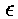
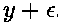
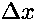
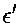
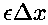

If we further restrict the line-drawing routine so that it always increments x as it plots, it becomes clear that, having plotted a point at (x,y), the routine has a severely limited range of options as to where it may put the next point on the line:
So, working in the first positive octant of the plane, line drawing becomes a matter of deciding between two possibilities at each step.
We can draw a diagram of the situation which the plotting program finds itself in having plotted (x,y).
In plotting (x,y) the line drawing routine will, in general, be making a compromise between what it would like to draw and what the resolution of the screen actually allows it to draw. Usually the plotted point (x,y) will be in error, the actual, mathematical point on the line will not be addressable on the pixel grid. So we associate an error, , with each y ordinate, the real value of y should be . This error will range from -0.5 to just under +0.5.
In moving from x to x+1 we increase the value of the true (mathematical) y-ordinate by an amount equal to the slope of the line, m. We will choose to plot (x+1,y) if the difference between this new value and y is less than 0.5.
Otherwise we will plot (x+1,y+1). It should be clear that by so doing we minimise the total error between the mathematical line segment and what actually gets drawn on the display.
The error resulting from this new point can now be written back into , this will allow us to repeat the whole process for the next point along the line, at x+2.
The new value of error can adopt one of two possible values, depending on what new point is plotted. If (x+1,y) is chosen, the new value of error is given by:
Otherwise it is:
This gives an algorithm for a DDA which avoids rounding operations, instead using the error variable to control plotting:
This still employs floating point values. Consider, however, what happens if we multiply across both sides of the plotting test by  and then by 2:
All quantities in this inequality are now integral.
Substitute  for . The test becomes:
This gives an integer-only test for deciding which point to plot.
The update rules for the error on each step may also be cast into form. Consider the floating-point versions of the update rules:
Multiplying through by yields:
which is in form.
Using this new ``error'' value, , with the new test and update equations gives Bresenham's integer-only line drawing algorithm:
Here is a C++ implementation of the Bresenham algorithm for line segments in the first octant.
void linev6(Screen &s,
unsigned x1, unsigned y1,
unsigned x2, unsigned y2,
unsigned char colour )
{
int dx = x2 - x1,
dy = y2 - y1,
y = y1,
eps = 0;
for ( int x = x1; x <= x2; x++ ) {
s.Plot(x,y,colour);
eps += dy;
if ( (eps << 1) >= dx ) {
y++; eps -= dx;
}
}
}
This is an all-integer function, employs left shift for multiplication
and eliminates redundant operations by tricky use of the
eps variable.This implementation of Bresenham's algorithm is incomplete, it does not check the validity of its arguments. A real implementation should do this. In fact, a real implementation of Bresenham's algorithm should do more than simply reject lines with slopes lying outside the first octant, it should handle lines of arbitrary slope.
As expected, it fails to plot lines with negative slopes (try it and see what happens). It also fails to plot lines of positive slope greater than 1 (this is an interesting case, try it also and see if you can explain what is happening).
More unusually, we find that the order in which the endpoints are supplied
to this routine is significant, it will only work as long as x1
is smaller than x2.
In fact, if we have two line segments with the same endpoints, and the same slope, this routine may draw one of them successfully but fails to draw the other one.
Of course, this is not surprising really, when we consider that the function works by incrementing x. It does emphasise, however, that the routine is plotting vectors, direction is significant. Considering all the vectors from (x1,y1) to (x2,y2) we find that there are eight regions, (the ``octants'') and the basic Bresenham algorithm works in only one of them.
A full implementation of the Bresenham algorithm must, of course, be able to handle all combinations of slope and endpoint order.
Some of the regions in the plane, those for which x2 is smaller than x1 can be handled by exchanging the endpoints of the line segment.
It is also clear that we will need a piece of code to handle large slopes by stepping over y instead of x values.
However, careful consideration of the diagram will reveal that there is one case which cannot be reduced to a version of the algorithm we have already looked at. If we want to draw a line having a small negative slope, we will have to consider a modification of the basic Bresenham algorithm to do this. (The same point applies to lines of large negative slope as well, but the code for small negative slopes may be adapted to this case by stepping over y instead of x).
Consider a line with negative slope between 0 and 1 (i.e., small negative slope. Given that a line-drawing algorithm has plotted a point at (x,y), its choice about where to plot the next point is between (x+1,y-1) and (x+1,y).
As usual there will be an error, , associated with y. Choice of the next point to plot will be based on an attempt to minimise error, so plot (x+1,y) if:
Otherwise plot (x+1,y-1). Notice that the error generated by the above is negative. A little manipulation gives a decision inequality:
It is worth comparing this with the decision inequality for the case of positive slope.
The error update rules are also subtly different for this case of negative slope.
If plotting (x+1,y) the new value of error is given by:
Otherwise, plotting (x+1,y-1) gives new error:
A pseudocode algorithm for this routine may be written as:
This is cast in terms of floating-point values.. It is, however, a trivial matter to convert the algorithm into an integer-only form.
Colin Flanagan / flanaganc@ul.ie